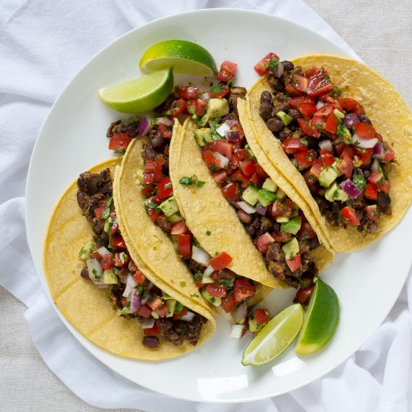

Black Bean Tacos with Tomato & Avocado Salsa

Nutrition (per serving)
650.3 kcalCalories
19.9 gProtein
94.2 gCarbs
25.7 gFat
Full nutrition table
| Calories | 650.3 kcal |
| Total fat | 25.7 g |
| Saturated fat | 8.7 g |
| Trans fat | 0 g |
| Cholesterol | 0 mg |
| Sodium | 563 mg |
| Carbohydrates | 94.2 g |
| Fiber | 29 g |
| Sugars | 5.7 g |
| Protein | 19.9 g |
| Potassium | 1505.8 mg |
| Calcium | 216.2 mg |
| Iron | 6 mg |
| Vitamin A | 754.3 IU |
| Vitamin C | 35 mg |
| Vitamin D | 0 IU |
Cookware
Ingredients
- 2avocados
- 2 (15 oz) cansblack beans
- 1 small bunchcilantro
- 1 pintgrape tomatoes
- 2limes
- 1 mediumred onion
- 16small corn tortillas
- black pepper
- chili powder
- cumin, ground
- salt
- virgin coconut oil
Steps
- Wash and dry the fresh produce.1 pint grape tomatoes
1 small bunch cilantro
2 avocados
2 limes - Small dice the tomatoes and transfer to a medium bowl.
- Halve the avocados lengthwise and twist the halves to separate, then remove the pit with a knife or spoon; scoop out and small dice the flesh. Add to the tomatoes.
- Using a knife, shave the cilantro leaves off the stems at a downward angle, working away from your body; discard the stems and finely chop the leaves. Add ½ of the cilantro to the bowl with the tomatoes and avocado and transfer the other ½ to a small bowl.
- Preheat a skillet over medium heat.
- While the skillet heats up, trim off and discard the ends of the onion and remove the outer layer; small dice the onion (cut into ¼-inch pieces). Transfer ½ of the onion to the bowl with the salsa ingredients and leave the rest on the cutting board.1 medium red onion
- Once the skillet is heated, add coconut oil and swirl to coat the bottom.1 tbsp virgin coconut oil
- Add the remaining onion to the skillet; cook, stirring occasionally, until softened, 3 to 5 minutes.
- While the onion cooks, drain and rinse the black beans in a colander.2 (15 oz) cans black beans
- Add more coconut oil to the skillet, followed by the beans and remaining cilantro.1 tbsp virgin coconut oil
- Season the bean mixture with chili powder, cumin, salt, and pepper; stir until fragrant, 15 to 30 seconds. Cook, stirring occasionally, until the beans are warmed through, 2 to 4 minutes. Mash some of the beans with a fork is desired.2 tsp chili powder
1 tsp cumin
1 tsp salt
½ tsp black pepper - Wrap the tortillas in a damp towel and microwave until heated through, 15 to 30 seconds.16 small corn tortillas
- Juice the limes; drizzle ½ of the lime juice over the beans and add the rest to the bowl with the salsa ingredients.
- Season the salsa with salt and pepper; mix together.½ tsp salt
½ tsp black pepper - To serve, place the bean mixture into the tortillas and top with the salsa. Enjoy!